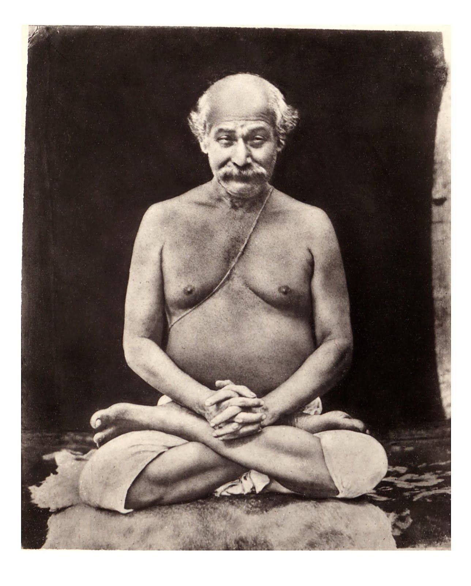

The mind is the only real obstacle to spiritual progress. Purify it, and all obstacles will vanish.
--ShyamaCharan Lahiri
With profound respect, we honor Shyamacharan Lahiri, also known as Lahiri Mahasaya. His teachings on Kriya Yoga and spiritual wisdom have guided countless individuals towards self-realization and inner peace. His life and wisdom continue to inspire and uplift us, embodying the essence of divine grace and compassion. We salute his enduring legacy and strive to follow his path of enlightenment and purity.